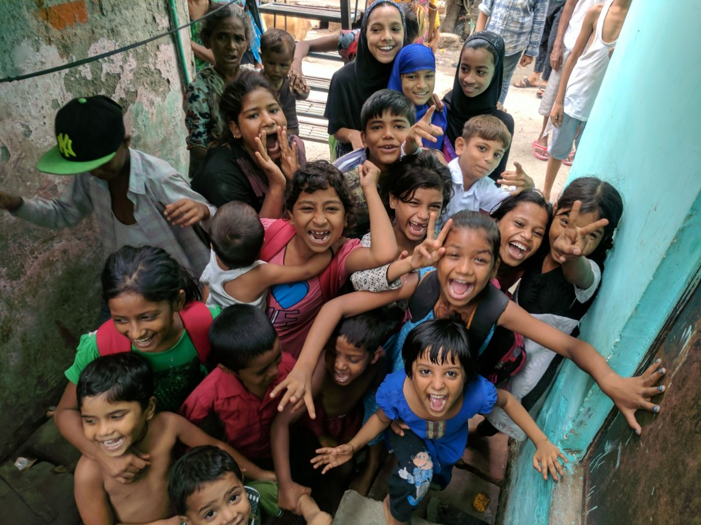

Spare a Thought...
Charity is something which only the very rich can do or so we think. Look around your neighbourhood, observe the lives of people, and you'll be surprised at the number of ways in which you can make a difference or you could simply support Mahima in its endeavours.
Be a part of the change Donate

Why Mahima?
Mahima is a secular, not-for-profit organization whose sole aim is to extend a helping hand to the needy without any consideration for caste, creed, or sex. We, at Mahima, realize that little drops make a mighty ocean. Conceived by a group of like-minded individuals who just happened to pray to the same God, Mahima Trust is funded by the initial seed money contributed by the trustees themselves and regular donations from some of the well-wishers.
Our Services
Our comprehensive range of services is designed to foster positive change, uplift lives, and address the pressing needs of our society. With a passion for philanthropy and a drive to make a difference, we offer services like supplying nutritious food, clothing, and necessary items to the poor, widows, orphans, homeless, patients, drug addicts, handicapped, and the aged, and to establish, support, maintain, and manage orphanages, ashrams, and homes for widows, aged people.
Our Mission
Our mission is to improve the quality of life for underprivileged communities by providing essential resources,support and opportunities.
Our Vision
Our charity is dedicated to serving the needs of those who are less fortunate, including the poor, widows, orphans, homeless individuals, drug addicts, handicapped, the elderly, as well as those affected by leprosy and HIV.
Our Programs
Our charitable organization offers a range of programs to support those in need, including food assistance, clothing and shelter assistance, healthcare assistance, education and skill-building, and support for orphanages, ashrams, and old age homes.